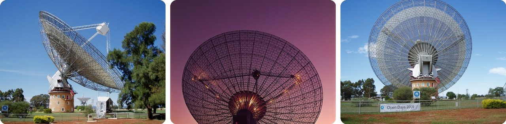
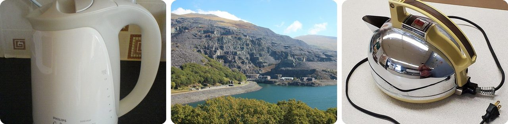

🌍 톱 10 생활 가전과 황당한 사고들
2026년 11월 18일
1. 🇺🇸 전자레인지는 녹아 버린 초코바 덕분에 발견됐어요
 1945년, 레이시온이라는 회사에서 일하던 독학 엔지니어 퍼시 스펜서는 작동 중인 레이더 장치 옆에서 일하고 있었어요. 그러다 주머니 속 초코바가 녹은 걸 알아챘어요.
1945년, 레이시온이라는 회사에서 일하던 독학 엔지니어 퍼시 스펜서는 작동 중인 레이더 장치 옆에서 일하고 있었어요. 그러다 주머니 속 초코바가 녹은 걸 알아챘어요.
왜 그런지 궁금해서 일부러 음식에 마이크로파를 쏴 봤어요. 처음 요리한 건 팝콘이었어요. 두 번째는 달걀이었는데, 실험하던 사람 얼굴 앞에서 펑 터졌어요.
처음 판매된 전자레인지인 1947년 레이더레인지는 키가 약 1.8미터(5피트 11인치), 무게가 340킬로그램(750파운드)으로 그랜드피아노만큼 무거웠어요. 레이시온이 계속 개선하고 있어서, 처음에는 팔지 않고 호텔과 식당에 하루 5달러에 빌려줬어요.
망친 간식에서 시작된 부엌 가전인 셈이에요.
2. 🇦🇺 전자레인지 하나가 천문학자들을 '우주 신호'로 속였어요

호주의 파크스 천문대에서는 거대한 전파 망원경이 계속 짧은 신호를 잡았어요. 깊은 우주에서 오는 신비한 섬광인 고속 전파 폭발과 아주 비슷해 보였죠. 옛 기록을 보니 1998년부터 2015년까지 이런 가짜 신호가 46번이나 있었어요.천문학자들은 이 신호에 '페리톤'이라는 별명을 붙였어요. 사람 그림자를 드리우는 상상 속 날개 달린 사슴 이름인데, 신호가 사람이 만든 것처럼 보였거든요. 2015년, 드디어 범인을 잡았어요. 천문대에서 누군가 타이머가 끝나기 전에 전자레인지 문을 연 거였어요.
문을 일찍 열면 전자레인지가 꺼지면서 짧은 전파 '삑' 소리를 내요. 범인인 전자레인지 두 대는 27년도 넘은 것이었고, 문을 일찍 열 때 두 번에 한 번꼴로 가짜 신호를 만들었어요.
한마디로, 우주의 수수께끼는 점심을 못 기다린 누군가였어요.
3. 🏴 세계 최초의 웹캠은 커피포트를 비췄어요
 1991년, 케임브리지 대학교 컴퓨터 연구소 사람들은 트로이 룸까지 걸어갔다가 커피포트가 비어 있는 걸 보는 게 지긋지긋했어요. 그래서 두 사람이 카메라로 커피포트를 비추고, 그 화면을 모두의 컴퓨터로 보냈어요.
1991년, 케임브리지 대학교 컴퓨터 연구소 사람들은 트로이 룸까지 걸어갔다가 커피포트가 비어 있는 걸 보는 게 지긋지긋했어요. 그래서 두 사람이 카메라로 커피포트를 비추고, 그 화면을 모두의 컴퓨터로 보냈어요.
화면은 128×128개의 회색 점밖에 안 되는 아주 작은 크기였어요. 요즘 화면에서는 우표보다도 작아요. 1993년에는 월드와이드웹에 올라가서, 전 세계 사람들이 영국의 커피포트를 들여다보기 시작했어요.
카메라는 2001년에 꺼졌고, 워싱턴포스트 같은 신문들도 이 소식을 다뤘어요. 나중에 커피 머신 하나는 이베이에서 3,350파운드에 팔렸어요.
다시 말해, 최초의 웹캠이 맡은 큰일은 헛걸음을 막아 주는 거였어요.
4. 🇬🇧 영국 TV 광고 시간이 되면 전기 주전자 때문에 전력망이 긴장해요

영국에서는 인기 TV 프로그램이 광고로 넘어가면, 수백만 명이 동시에 일어나 차를 마시려고 전기 주전자를 켜요. 이걸 TV 픽업이라고 하는데, 영국 주전자는 힘이 세서 하나에 2.5~3킬로와트나 써요.보통의 TV 픽업은 순식간에 200~400메가와트의 전력 수요를 더해요. 역대 최대는 1990년 7월 4일, 잉글랜드가 월드컵 승부차기에서 서독에 진 직후였어요. 무려 2,800메가와트였어요.
전력망은 미리 대비해요. 웨일스의 디노르윅 발전소는 산 위 호수에 물로 에너지를 저장해 두었다가, 그 물을 아래로 쏟아 내려서 단 12초 만에 1,320메가와트를 보낼 수 있어요.
온 나라가 동시에 변기 물을 내리는 건데, 그게 차라고 생각해 보세요.
5. 🇬🇧 진공청소기 발명가는 은가루를 빨아들였다가 체포됐어요
 1901년, 영국 엔지니어 허버트 세실 부스는 의자 위 먼지를 바람으로 날려 버리는 기계를 보고 생각했어요. '거꾸로 빨아들이면 어떨까?' 그는 식당 의자 위에 손수건을 올려놓고 입으로 손수건 너머의 먼지를 빨아들여 아이디어를 시험했어요.
1901년, 영국 엔지니어 허버트 세실 부스는 의자 위 먼지를 바람으로 날려 버리는 기계를 보고 생각했어요. '거꾸로 빨아들이면 어떨까?' 그는 식당 의자 위에 손수건을 올려놓고 입으로 손수건 너머의 먼지를 빨아들여 아이디어를 시험했어요.
'퍼핑 빌리'라는 별명이 붙은 그의 기계는 너무 커서 말이 끄는 수레에 실려 다녔어요. 일꾼들이 건물 밖에 수레를 세워 두고, 긴 호스를 창문으로 넣어서 안을 청소했어요.
말썽도 좀 있었어요. 소음 때문에 항의를 받았고, 말을 놀라게 했다고 벌금까지 냈어요. 동전을 만드는 왕립 조폐국을 청소하고 나오다가 체포되기도 했어요. 기계 안에 은가루가 가득 찼는데 비우는 걸 깜빡했거든요. 그는 금방 풀려났어요.
한마디로, 진공청소기로 저지른 실수투성이 '도둑질'이었어요.
6. 🇺🇸 식기세척기는 누군가의 고급 그릇이 자꾸 깨져서 발명됐어요
 조지핀 코크런은 시카고 상류 사회의 일원이었어요. 어느 날 저녁 파티가 끝나고 설거지를 하다가, 집안 대대로 내려온 그릇 몇 개가 이가 빠졌어요. 그녀는 기계가 더 잘할 수 있다고 생각했어요.
조지핀 코크런은 시카고 상류 사회의 일원이었어요. 어느 날 저녁 파티가 끝나고 설거지를 하다가, 집안 대대로 내려온 그릇 몇 개가 이가 빠졌어요. 그녀는 기계가 더 잘할 수 있다고 생각했어요.
그녀는 그릇 크기를 재서 접시, 컵, 받침 접시에 딱 맞는 철사 선반을 만들었어요. 선반을 구리 통 안의 바퀴 위에 올려요 → 모터가 바퀴를 돌려요 → 뜨거운 비눗물이 아래에서 위로 뿜어져 그릇 위로 비처럼 쏟아져요. 솔 대신 물의 압력으로 씻은 최초의 식기세척기였어요.
그녀는 1886년 12월 28일에 특허를 받았어요. 1893년 시카고 세계 박람회에서는 그녀의 기계 아홉 대가 식당에서 설거지를 했고, 그녀의 회사는 나중에 키친에이드의 일부가 됐어요.
접시 몇 개를 지키려고 만든 완전히 새로운 기계인 셈이에요.
7. 🇩🇪 알베르트 아인슈타인은 냉장고를 발명했어요
 1920년대, 베를린 신문들은 냉장고 밀봉 부품이 망가져 독가스가 집 안으로 새는 바람에 한 가족이 목숨을 잃었다고 보도했어요. 알베르트 아인슈타인과 그의 옛 제자 레오 실라르드는 이 문제를 해결해 보기로 했어요.
1920년대, 베를린 신문들은 냉장고 밀봉 부품이 망가져 독가스가 집 안으로 새는 바람에 한 가족이 목숨을 잃었다고 보도했어요. 알베르트 아인슈타인과 그의 옛 제자 레오 실라르드는 이 문제를 해결해 보기로 했어요.
두 사람의 아이디어는 움직이는 부품이 없는 냉장고였어요. 그러면 닳아 없어질 밀봉 부품도 없으니까요. 열만 있으면 돌아가고, 물, 암모니아, 부탄이라는 세 가지 액체를 썼어요. 1926년부터 1934년까지 여섯 나라에서 특허를 45개나 받았어요.
하지만 다른 냉장고보다 효율이 떨어졌고, 나중에 더 안전한 냉매 가스가 나왔어요. 두 사람이 판 특허로 번 돈은 고작 750달러, 지금 돈으로 약 1만 달러였어요.
다시 말해, 역사상 가장 위대한 과학자 중 한 명도 부엌 냉장고를 고쳐 보려고 했던 거예요.
8. 🇺🇸 한 블렌더 회사는 휴대폰을 갈아서 유명해졌어요
 블렌더 회사 블렌드텍을 세운 톰 딕슨은 실험 삼아 성냥 한 상자를 갈아 본 적이 있어요. 그게 계기가 되어 영상 시리즈가 생겼고, 그는 매회 "갈릴까요? 그것이 문제로다."라는 말로 시작했어요.
블렌더 회사 블렌드텍을 세운 톰 딕슨은 실험 삼아 성냥 한 상자를 갈아 본 적이 있어요. 그게 계기가 되어 영상 시리즈가 생겼고, 그는 매회 "갈릴까요? 그것이 문제로다."라는 말로 시작했어요.
그는 아이패드, 아이폰 4, 그리고 '코치킨'을 갈았어요. 익힌 닭 반 마리를 코카콜라 한 캔과 뼈째 간 거예요(먹으면 안 돼요).
2007년에는 캠코더를 갈았어요. 그 뒤 영상 팀이 남은 조각을 전자제품 매장 베스트바이에 반품하려고 했는데, 안 받아 줬대요.
요리 프로그램인데, 재료가 휴대폰인 셈이에요.
9. 🍞 토스터는 대부분의 사람보다 먼저 인터넷에 접속했어요
 1990년, 컴퓨터 과학자 존 롬키와 사이먼 해킷은 토스터를 인터넷에 연결했어요. 온라인으로 조종할 수 있는 최초의 가전이 된 거예요. 그때는 대부분의 집에 인터넷도 없었어요.
1990년, 컴퓨터 과학자 존 롬키와 사이먼 해킷은 토스터를 인터넷에 연결했어요. 온라인으로 조종할 수 있는 최초의 가전이 된 거예요. 그때는 대부분의 집에 인터넷도 없었어요.
토스터 아이디어는 점점 더 엉뚱해졌어요. 2001년, 영국 브루넬 대학교의 한 디자이너는 날씨 서비스에 전화를 걸어 '맑음'이나 '흐림' 예보를 빵 위에 구워 주는 토스터를 만들었어요.
나중에는 트위터를 쓰는 토스터가 '사물 인터넷', 그러니까 일상 물건이 인터넷과 대화한다는 아이디어의 초기 예로 꼽혔어요.
이메일을 확인하는 아침밥이라고 생각해 보세요.
10. 🇬🇧 차 끓이는 자명종은 강 때문에 이름을 거절당했어요
 티즈메이드는 침대 옆에 두는 자명종인데 차도 끓여 줘서, 눈뜨자마자 따뜻한 차를 마실 수 있어요. 1902년, 버밍엄의 총기 장인 프랭크 클라크가 이걸 특허 내고 "차를 끓이는 시계!"라는 이름으로 팔았어요.
티즈메이드는 침대 옆에 두는 자명종인데 차도 끓여 줘서, 눈뜨자마자 따뜻한 차를 마실 수 있어요. 1902년, 버밍엄의 총기 장인 프랭크 클라크가 이걸 특허 내고 "차를 끓이는 시계!"라는 이름으로 팔았어요.
1932년, 조지 앱솔롬은 전기로 작동하는 걸 발명하고 '티스메이드(Teesmade)'라는 이름을 등록하려 했어요. 그런데 특허청이 거절했어요. 티스강 근처에서 만든 게 아니라서, 그 이름이 사람들을 헷갈리게 할 수 있다는 이유였어요.
나중에 고블린 티즈메이드가 큰 인기를 끌었는데, 이걸 판 회사는 바로 부스의 진공청소기 사업에서 커진 회사였어요. 티즈메이드는 1960~70년대에 가장 인기였고, 퀸의 'I Want to Break Free' 뮤직비디오에서는 브라이언 메이를 깨우기도 해요.
차로 꼬드겨서 침대 밖으로 끌어내는 자명종인 셈이에요.
재미있는 사실
트로이 룸 커피포트는 지금도 인터넷 속에 숨어 있는 농담 하나를 낳았어요. 1998년 만우절, 인터넷 표준을 정하는 진지한 단체가 온라인으로 커피포트를 조종하는 규칙을 발표했는데, 거기에 오류 코드 418, "나는 찻주전자예요"가 들어 있었어요. 2017년에 관계자들이 유명 소프트웨어에서 이걸 지우려고 하자, 열다섯 살 소년이 '418 살리기' 운동을 벌여서 결국 이겼어요. 또 어떤 만우절 농담이 진짜가 됐을지 궁금해지지 않나요?
사진 출처 (Wikimedia Commons)
- #1: Raytheon RadaRange NS Savannah MD1.jpg by Acroterion, CC BY-SA 4.0
- #1: Amana Radarange Microwave Oven.jpg by TaurusEmerald, CC BY-SA 4.0
- #1: Tappan Model RL-1 Microwave Oven (smithsonian_american_history_museum) by Raytheon Manufacturing Co. and Tappan, CC0
- #2: CSIRO Parkes Radio Telescope (flickr) by amandabhslater, CC BY-SA 2.0
- #2: CSIRO ScienceImage 4350 CSIROs Parkes Radio Telescope with moon in the background.jpg by division, CSIRO, CC BY 3.0
- #2: CSIRO Parkes Radio Telescope (flickr) by amandabhslater, CC BY-SA 2.0
- #3: Trojan Room Coffee Pot (x1.jpg).jpg by Daniel Gordon, Martyn Johnson and Quentin Stafford-Fraser, CC BY-SA 3.0
- #3: Trojan Room coffee pot xcoffee.png by Quentin Stafford-Fraser, CC BY-SA 3.0
- #3: Trojan Room coffee pot xvcoffee.jpeg by Daniel Gordon, Martyn Johnson and Quentin Stafford-Fraser, CC BY-SA 3.0
- #4: Electric kettle phillips white.JPG by Rafa, Public domain
- #4: Dinorwig pumped hydro Power Station at Slate Quarry near Llanberis (flickr) by John Englart (Takver), CC BY-SA 2.0
- #4: General electric - electric water kettle.jpg by Cantons-de-l'Est, CC BY-SA 4.0
- #5: Hubert Cecil Booth Straßenstaubsauger von 1901.jpg by Unknown authorUnknown author, Public domain
- #5: Booth's vacuum cleaner, Science Museum, London.jpg by Matt Brown, CC BY 2.0
- #5: Antique vacuum cleaner and woodstove (flickr) by quinet, CC BY 2.0
- #6: Stamps of Romania, 2013-34.jpg by Post of Romania, Public domain
- #6: Dishwasher demonstration 1921.jpg by Unknown authorUnknown author, Public domain
- #6: Lincoln buff set - 1864.jpg by Detweiler, Susan G. (1975). American Presidential China. Washington, D.C.: Smithsonian Institution, p. 46., Public domain
- #7: Einstein Refrigerator pat1781541 clarified.jpg by Einstein/Szilard with annotations by P. Brandon Malloy, Public domain
- #7: Albert Einstein 1921 (cropped).jpg by Harris & Ewing Studio, active 1905 - 1977, CC0
- #7: Leo Szilard.jpg by U.S. Department of Energy, Public domain
- #8: Blendtec Total Blender.jpg by Trebz, CC BY 2.0
- #8: Tom Dickson.jpg by Andrew Baron from NYC, United States, CC BY 2.0
- #8: Will Scoble Blend? No! (flickr) by Robert Scoble, CC BY 2.0
- #9: The Internet Toaster (flickr) by public.resource.org, CC0
- #9: Internet Toaster (flickr) by public.resource.org, CC BY 2.0
- #9: 20200721-FlickrFriday Polished Vintage Toaster (flickr) by C E Andersen, CC BY 2.0
- #10: Early Teasmade - Science Museum London (flickr) by Haydn Blackey, CC BY-SA 2.0
- #10: GoblinTeasmade.jpg by MortimerCat, CC BY-SA 3.0
- #10: Teasmade (flickr) by Simon Harriyott, CC BY 2.0


.jpg){kind=link}


.jpg){kind=link}